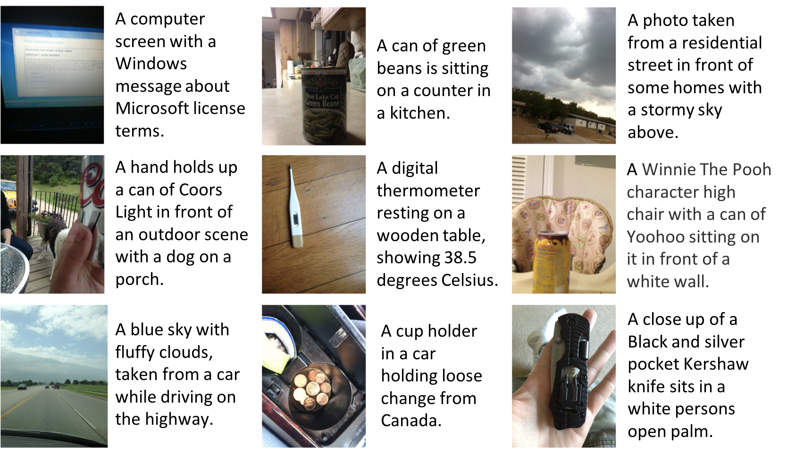
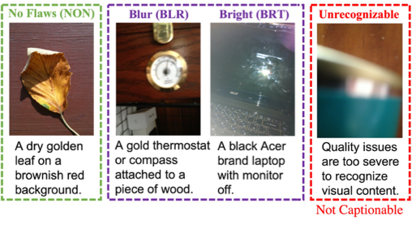
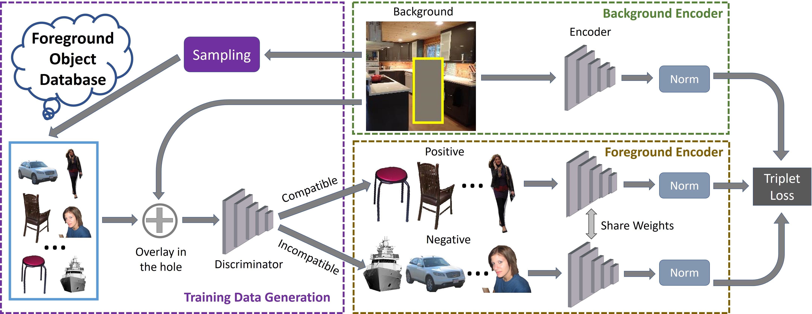
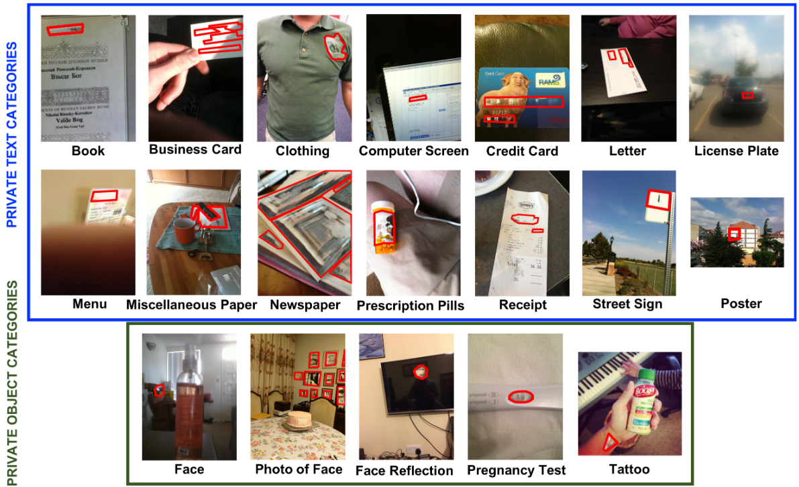
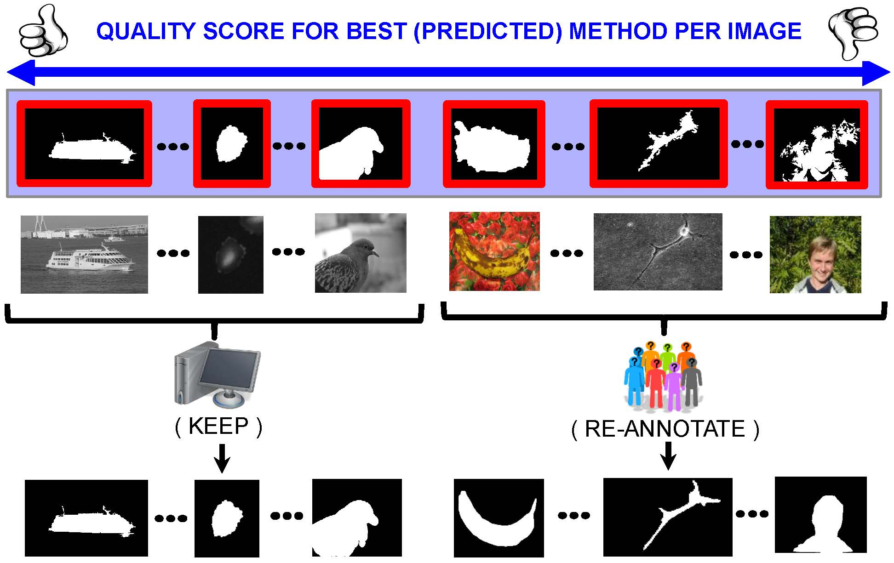
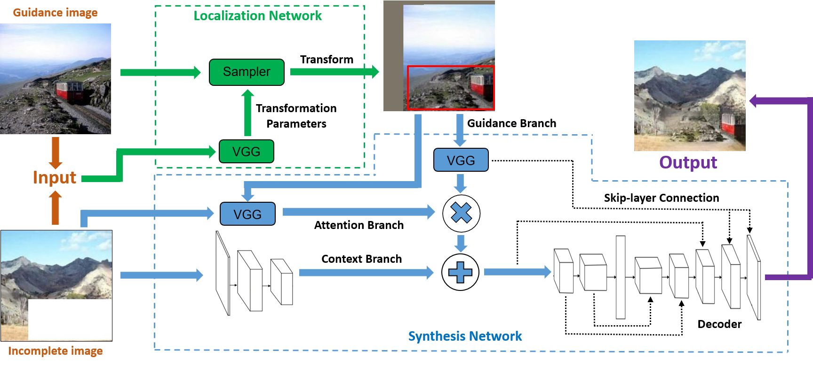

Yinan Zhao
Ph.D. Student
Department of Computer Science
University of Texas at Austin
Email: yinanzhao (at) utexas (dot) edu
Office: GDC 4.728D
Short Bio
I am a fifth year (2015-) Computer Science graduate student at The University of Texas at Austin, supervised by Prof. Danna Gurari. I obtained my bachelor degree at Tsinghua University in 2015. I have also spent time in Adobe Research and University of Toronto.
My research interests lie in Computer Vision and Deep Learning.
Publications
| | Objectness-Aware One-Shot Semantic Segmentation Yinan Zhao, Brian Price, Scott Cohen, Danna Gurari pre-print [pdf] |
|  | Captioning Images Taken by People Who Are Blind Danna Gurari, Yinan Zhao, Meng Zhang, Nilavra Bhattacharya ECCV 2020 [pdf] [project page] |
|  | Assessing Image Quality Issues for Real-World Problem Tai-Yin Chiu, Yinan Zhao, Danna Gurari CVPR 2020 [pdf] |
|  | Unconstrained Foreground Object Search Yinan Zhao, Brian Price, Scott Cohen, Danna Gurari ICCV 2019 [pdf] [poster] |
|  | VizWiz-Priv: A Dataset for Recognizing the Presence and Purpose of Private Visual Information in Images Taken by Blind People Danna Gurari, Qing Li, Chi Lin, Yinan Zhao, Anhong Guo, Abigale Stangl, Jeffrey P. Bigham CVPR 2019 [pdf] [supplementary] |
|  | Predicting How to Distribute Work Between Algorithms and Humans to Segment an Image Batch Danna Gurari, Yinan Zhao, Suyog Dutt Jain, Margrit Betke, Kristen Grauman IJCV 2019 [pdf] [IJCV version] |
|  | Guided Image Inpainting: Replacing an Image Region by Pulling Content from Another Image Yinan Zhao, Brian Price, Scott Cohen, Danna Gurari WACV 2019 [pdf] |
Experiences
-
Creative Intelligence Lab, Adobe Research, San Jose, USAMay 2020 – Aug 2020
Computer Vision Research Intern
Advisors: Dr. Brian Price and Dr. Scott Cohen
-
Creative Intelligence Lab, Adobe Research, San Jose, USAMay 2018 – Aug 2018
Computer Vision Research Intern
Advisors: Dr. Brian Price and Dr. Scott Cohen
-
Creative Intelligence Lab, Adobe Research, San Jose, USAMay 2017 – Aug 2017
Computer Vision Research Intern
Advisors: Dr. Brian Price and Dr. Scott Cohen
-
University of Toronto, Toronto, CanadaJun 2014 – Sep 2014
Undergraduate Visiting Student
Advisors: Dr. Sanja Fidler and Dr. Raquel Urtasun